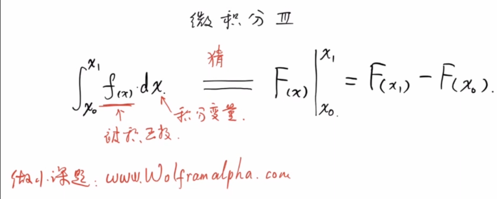
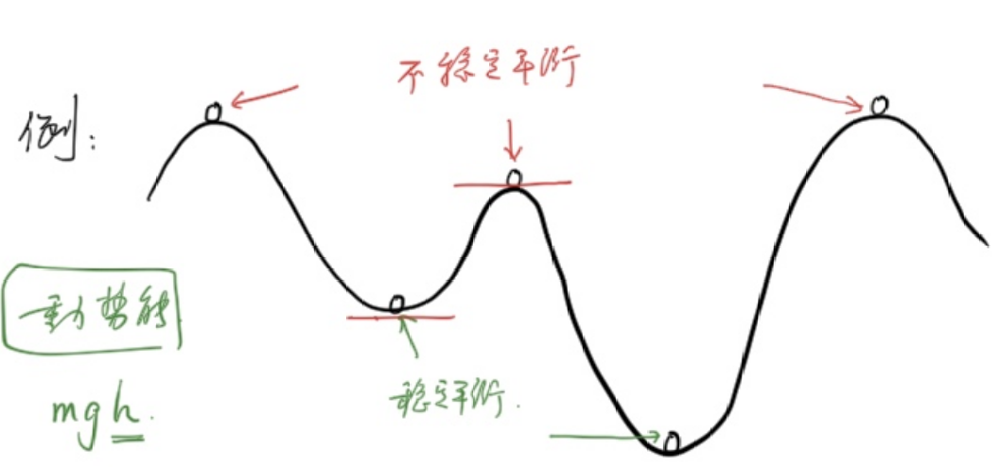
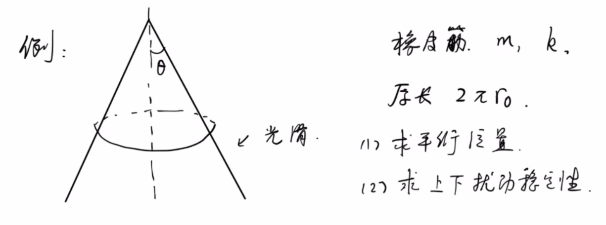
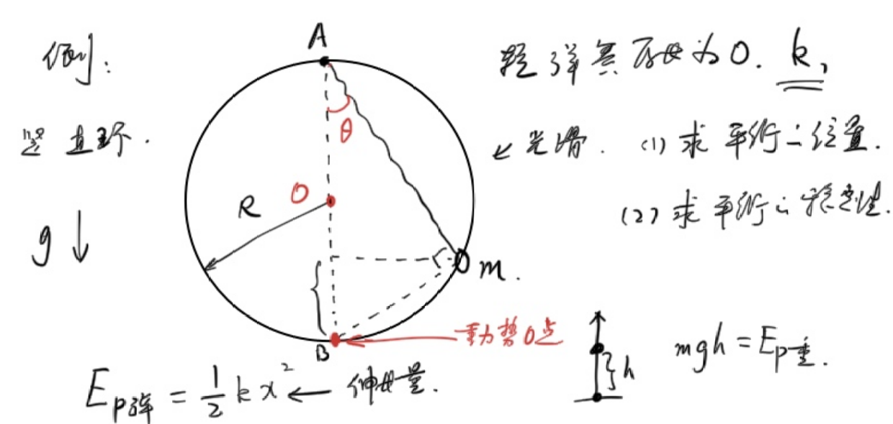
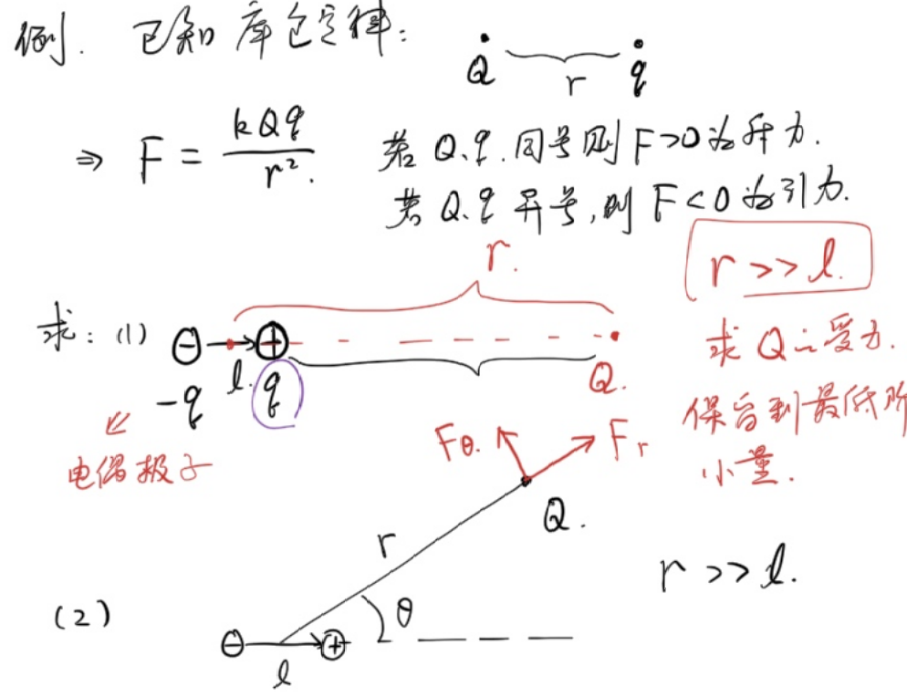
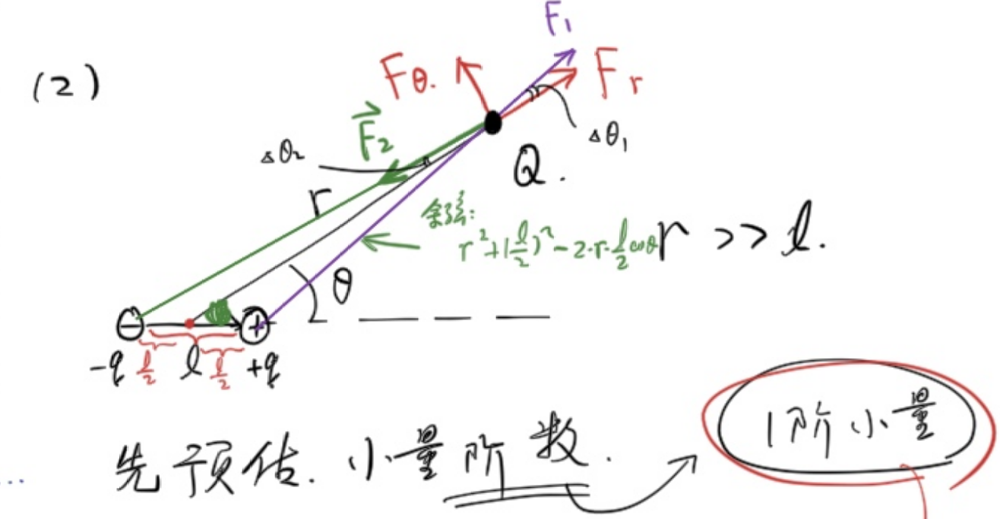

朝花夕拾

例1
有一个质量均匀的圆锥，其母线与高的夹角为\(\theta\)，底面半径为\(r\),密度为\(\rho\).
(1)求总质量
(2)求重心位置
设原点为锥顶，圆锥的高为x轴
(1)
\[\begin{gathered} dm=\rho Sdh\\ =\pi\rho (h\tan\theta)^2dh\\ m=\int dm\\ =\pi\rho\tan^2\theta\int_0^{r\cot\theta}h^2dh\\ =\pi\rho\tan^2\theta\left(\frac{1}{3}h^3)\right|_0^{r\cot\theta}\\ =\frac{1}{3}\pi\rho r^3\cot\theta \end{gathered}\]
(2)
由对称性知，重心在圆锥的高上.
\[\begin{gathered} x_c=\frac{\int m_ix_i}{m}\\ =\frac{\int_0^{r\cot\theta}\pi\rho\tan^2\theta x^3dx}{m}\\ =\frac{\pi\rho\tan^2\theta\int_0^{r\cot\theta}x^3dx}{\frac{1}{3}\pi\rho r^3\cot\theta}\\ =3\frac{\tan^3\theta}{r^3}\frac{(r\cot\theta)^4}{4}\\ =\frac{3}{4}r\cot\theta \end{gathered}\]
例3
求均匀半球壳的重心位置
以球心为原点，垂直截面方向为x轴
不妨设单位面积质量为1.
仿照求n维球的体积，我们考虑在\(\theta,d\theta\)处各切一刀。
与半球壳的本质区别
| | n维球体积 | 半球壳面积 | |---|---|---| | 切片方式 | 水平薄片，厚度 \(\|dy\| = R\sin\theta\,d\theta\) | 球面环形，弧长 \(dl = R\,d\theta\) | | \(R\sin\theta\,d\theta\) | ✅ 正确（竖直厚度） | ❌ 错误（应为弧长） |
\[\begin{gathered} dm=(2\pi R\sin\theta)Rd\theta\\ x_c=\frac{\int_{0}^{\frac{\pi}{2}} R\cos\theta dm}{2\pi R^2}\\ =\frac{2\pi R^3\int_{0}^{\frac{\pi}{2}}\sin\theta\cos\theta d\theta}{2\pi R^2}\\ =\frac{2\pi R^3\int_{0}^{\frac{\pi}{2}}\sin\theta d\sin\theta}{2\pi R^2}\\ =\frac{2\pi R^3\int_{0}^{1}udu}{2\pi R^2}\\ =\frac{2\pi R^3\times\frac{1}{2}}{2\pi R^2}\\ =\frac{1}{2}R \end{gathered}\]
例4
求均匀半球体的重心位置
以球心为原点，垂直截面方向为x轴
不妨设单位体积质量为1.
我们平行截面横切：
法一
\[\begin{gathered} dm=\pi (R\sin\theta)^2\sin\theta Rd\theta\\ x_c=\frac{\int R\cos\theta dm}{\frac{2}{3}\pi R^3}\\ =\frac{\pi R^4\int_{0}^{\frac{\pi}{2}}\sin^3\theta\cos\theta d\theta}{\frac{2}{3}\pi R^3}\\ =\frac{3}{2}R\int_{0}^{\frac{\pi}{2}}\sin^3\theta d\sin\theta\\ =\frac{3}{2}R\int_{0}^1u^3du\\ =\frac{3}{8}R \end{gathered}\]
法二
\[\begin{gathered} dm=\pi (R^2-x^2)dx\\ x_c=\frac{\int dmx}{\frac{2}{3}\pi R^3}\\ =\frac{\pi \int_{0}^R (R^2-x^2)xdx}{\frac{2}{3}\pi R^3}\\ =\frac{\pi \left(\frac{R^2}{2}x^2-\frac{1}{4}x^4\right)|_0^R}{\frac{2}{3}\pi R^3}\\ =\frac{3}{8}R \end{gathered}\]
平衡的稳定性
在保守力下，若势能处于极值时，则平衡：
- 势能处在极大值：不稳定平衡
- 势能处在极小值：稳定平衡
说文解字：保守力做功与路径无关，只与初末位置相关
重力，引力，静电力都是保守力
摩擦力是典型的非保守力

导数极值第二充分条件
定理内容
设函数 \(f(x)\) 在点 \(x_0\) 处具有二阶导数，且 \(f'(x_0) = 0\)（即 \(x_0\) 为驻点）：
- 若 \(f''(x_0) < 0\)，则 \(f(x)\) 在 \(x_0\) 处取得极大值。
- 若 \(f''(x_0) > 0\)，则 \(f(x)\) 在 \(x_0\) 处取得极小值。
- 若 \(f''(x_0) = 0\)，则该定理失效，无法判定是否取得极值（需使用第一充分条件或更高阶导数判断）。
---
应用示例
求函数 \(f(x) = x^3 - 3x\) 的极值。
解： 首先求一阶导数： \[f'(x) = 3x^2 - 3\]
令 \(f'(x) = 0\)，解得驻点为： \[x_1 = 1, \quad x_2 = -1\]
再求二阶导数： \[f''(x) = 6x\]
将驻点代入二阶导数进行判断：
\[f''(1) = 6 > 0\] 所以 \(f(x)\) 在 \(x = 1\) 处取得极小值，极小值为 \(f(1) = -2\)。
\[f''(-1) = -6 < 0\] 所以 \(f(x)\) 在 \(x = -1\) 处取得极大值，极大值为 \(f(-1) = 2\)。
- 对于 \(x_1 = 1\)：
- 对于 \(x_2 = -1\)：
例5
有一个质量为\(m\),劲度系数为\(k\),原长为\(2\pi r_0\)的橡皮筋，位于母线与高线夹角为\(\theta\)的圆锥上.
(1)求平衡位置
(2)求上下扰动稳定性

(1)
设平衡位置到锥顶的高度差为\(z\),平衡时橡皮筋伸长量为\(x\)
\[\begin{gathered} x=2\pi (z\tan\theta-r_0)\\ E_p=\frac{1}{2}kx^2-mgz\\ =2\pi^2 k(z\tan\theta-r_0)^2-mgz\\ =2\pi^2k\tan^2\theta z^2-(mg+4\pi^2kr_0\tan\theta)z+2\pi^2kr_0^2\\ z_0=\frac{mg+4\pi^2kr_0\tan\theta}{4\pi^2k\tan^2\theta} \end{gathered}\]
(2)
\(E_p(z)\)在\(z=z_0\)处取得极小值，故平衡为稳定平衡.
例6
光滑圆环半径为\(R\),弹簧一端挂在圆环正上方,另一端拴着质量为\(m\)的小球.圆环穿过小球.弹簧原长为0,劲度系数为\(k\)
(1)求平衡位置
(2)求平衡的稳定性.

(1)
设弹簧与竖直方向夹角为\(\theta\)
\[\begin{gathered} E_p=\frac{1}{2}k(2R\cos\theta)^2+mg(2R\sin^2\theta)\\ =2kR^2\cos^2\theta+2mgR(1-\cos^2\theta)\\ =2R(kR-mg)\cos^2\theta+2mgR\\ \frac{dE_p}{d\theta}=4R(mg-kR)\cos\theta\sin\theta=0\\ \rightarrow \sin2\theta=0\\ \theta=0 \text{ or } \frac{\pi}{2} \end{gathered}\]
平衡位置为A点，B点
(2)
\[\begin{gathered} \frac{d^2E_p}{d\theta^2}=4R(mg-kR)\cos2\theta \end{gathered}\]
若\(mg\lt kR\)，则\(\theta=0\)时，\(\frac{d^2E_p}{d\theta^2}\lt0\)
为势能极大值点，B点属于不稳定平衡.
\(\theta=\frac{\pi}{2}\)时，\(\frac{d^2E_p}{d\theta^2}\gt0\)
为势能极小值点，A点属于稳定平衡
\(mg\gt kR\),情况恰相反
小量展开
例7
\(f(x)=\sqrt{x}\),估算\(f(4.01)\)
泰勒展开
鸭子原则：有一个长得像鸭子的东西，听声音也很像鸭子，吃肉也是鸭子味，那这就是一只鸭子
不断地获得更多的信息，即可逼近真相
\[\boxed{f(x_0+x)=f(x_0)+f'(x_0)x+\frac{f''(x)}{2!}x^2+\frac{f'''(x)}{3!}x^3+...}\]例8
\(f(x)=x^\alpha\)在1附近的展开:
\[\begin{gathered} f'(x)=\alpha x^{\alpha-1},f'(1)=\alpha\\ f''(x)=\alpha(\alpha-1)x^{\alpha-2},f''(1)=\alpha(\alpha-1)\\ ...\\ f(1+x)=1+\alpha x+\frac{\alpha(\alpha-1)}{2}x^2+...\\ \text{其中,}|x|\lt 1 \end{gathered}\]
同理得到其他常见泰勒展开
\[\begin{gathered} \sin\theta=\theta-\frac{1}{3!}\theta^3+\frac{1}{5!}\theta^5+...\\ \cos\theta=1-\frac{1}{2!}\theta^2+\frac{1}{4!}\theta^4\\ e^x=1+x+\frac{1}{2!}x^2+\frac{1}{3!}x^3+...\\ \ln (1+x)=x-\frac{1}{2}x^2+\frac{1}{3}x^3-... \end{gathered}\]
例9
证明:\(1+e^{i\pi}=0\)或\(e^{i\theta}=\cos\theta+i\sin\theta\)，其中\(i\)为虚数单位.
把\(i\theta\)带入\(e^x\)泰勒展开易证.
例10
例题：电偶极子的受力
已知条件
库仑定律：
\[F = \frac{kQq}{r^2}\]
- 若 \(Q\)、\(q\) 同号，则 \(F > 0\)，为斥力
- 若 \(Q\)、\(q\) 异号，则 \(F < 0\)，为引力
---
题目
电偶极子由一对等量异种电荷 \(+q\) 与 \(-q\) 组成，两者间距为 \(l\)。
求：
(1) 电偶极子轴线延长线上，距偶极子中心距离为 \(r\) 处的点电荷 \(Q\) 所受的力。
条件：\(r \gg l\)，保留到最低阶小量。
(2) 电偶极子轴线与连线成 \(\theta\) 角、距偶极子中心距离为 \(r\) 处的点电荷 \(Q\) 所受的力（分解为径向分量 \(F_r\) 和切向分量 \(F_\theta\)）。
条件：\(r \gg l\)，保留到最低阶小量。

(1)
\[\begin{gathered} F=\frac{kQq}{(r-\frac{l}{2})^2}+\frac{kQ(-q)}{(r+\frac{l}{2})^2}\\ =\frac{kQq}{r^2}[(1-\frac{l}{2r})^{-2}-(1+\frac{l}{2r})^{-2}]\\ \approx \frac{kQq}{r^2}{\frac{2l}{r}}\\ =\frac{2kQql}{r^3} \end{gathered}\]
其中\(p=ql\)，称为偶极矩
(2)

\[\begin{gathered} F_r=F_1\cos\Delta\theta_1-F_2\cos\Delta\theta_2\\ =F_1(1-\frac{1}{2}\Delta\theta_1^2)-F_2(1-\frac{1}{2}\Delta\theta_2^2)\\ \xlongequal{\text{忽略二阶小量}}F_1-F_2\\ =\frac{kQq}{r^2+(\frac{l}{2})^2-2r\frac{l}{2}\cos\theta}-\frac{kQq}{r^2+(\frac{l}{2})^2+2r\frac{l}{2}\cos\theta}\\ =\frac{kQq}{r^2}(\frac{1}{1-\frac{l}{r}\cos\theta+\frac{l^2}{4r^2}}-\frac{1}{1+\frac{l}{r}\cos\theta+\frac{l^2}{4r^2}})\\ \xlongequal{\text{泰勒展开}}\frac{kQq}{r^2}(\frac{2l\cos\theta}{r})\\ =\frac{2kQql\cos\theta}{r^3} \end{gathered}\]
\[\begin{gathered} F_\theta=\frac{kQql\sin\theta}{r^3} \end{gathered}\]
例11
在相对论中，物体的总能量\(E=mc^2\)
其中\(m\)为动质量:\(m=\frac{1}{\sqrt{1-\frac{v^2}{c^2}}}m_0\)
其中\(v\)为物体速度，\(c\)为光速，\(m_0\)为静质量
称\(E_0=m_0c^2\)为静能量，有
\[\boxed{E_k=E-E_0}\]
而根据经典物理\(E_k=\frac{1}{2}mv^2\)
证明：在\(v\lt\lt c\)时，相对论中的\(E_k\)还原为经典物理学中的动能
\[\begin{gathered} E_k=\frac{1}{\sqrt{1-\frac{v^2}{c^2}}}m_0c^2-m_0c^2\\ =m_0c^2[(1-\frac{v^2}{c^2})^{\frac{-1}{2}}-1]\\ \xlongequal{\text{保留一阶小量}}\frac{1}{2}m_0v^2 \end{gathered}\]
例12
有一杯糖水，其密度\(\rho(x)\)与深度相关,\(\rho(x)=\rho_0e^\frac{x}{l_0}\)
有一个密度为\(\rho_1=1.5\rho_0\)的均匀硬棒，截面积为\(S\)，长度为\(l_0\)
求平衡时，顶端到水面的距离(在水面上还是水面下?).
\(m_0=\rho_1Sl_0=1.5\rho_0Sl_0\)
假设上端在水面上,浸入水中的长度\(x_0\lt l_0\)
\[\begin{gathered} F=\int_{0}^{x_0}\rho(x)gSdx\\ =\rho_0gS\int_{0}^{x_0}e^\frac{x}{l}dx\\ =\rho_0gSl(e^{\frac{x_0}{l}}-1) \end{gathered}\]
要求\(F=m_0g=\rho_1Sl_0=1.5\rho_0gSl_0\)
即\(e^\frac{x_0}{l_0}=2.5,x_0\lt l_0\)，假设成立
Sonnet 4.6总结 ---
总结
本节围绕微积分在物理建模中的核心应用，串联了以下几条主线：
质心计算：通过微元积分，分别求解了均匀圆锥（\(\frac{3}{4}r\cot\theta\)）、半球壳（\(\frac{1}{2}R\)）和半球体（\(\frac{3}{8}R\)）的重心位置，体会切片方式的选取对积分的影响。
平衡与稳定性：引入势能极值判据——势能极小对应稳定平衡，势能极大对应不稳定平衡。通过圆锥上的橡皮筋和圆环弹簧小球两个模型，将该判据具体化为对 \(E_p\) 二阶导数的符号分析。
泰勒展开与小量近似：掌握 \((1+x)^\alpha\)、\(\sin\theta\)、\(\cos\theta\)、\(e^x\)、\(\ln(1+x)\) 等常见展开式，并应用于：
- 电偶极子受力（引出偶极矩 \(p = ql\)）
- 相对论动能在 \(v \ll c\) 下还原为 \(\frac{1}{2}m_0v^2\)
- 非均匀密度糖水中硬棒的浮力平衡
核心思想：复杂问题的关键往往在于选取合适的微元与坐标系，再结合小量展开保留主要项，从而将繁琐的精确计算化为简洁的近似结果。